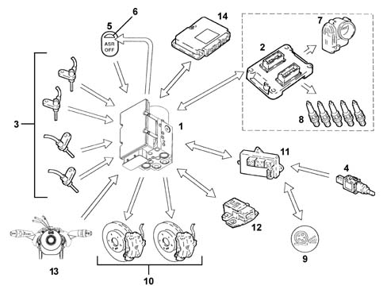
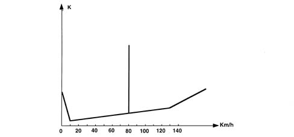
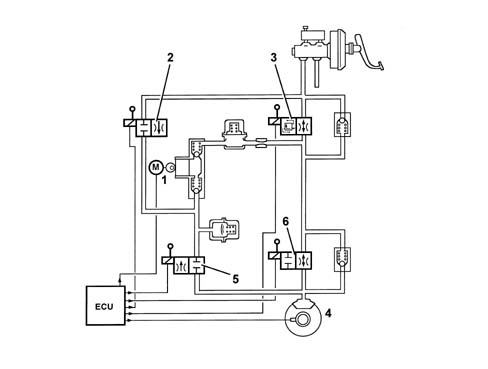
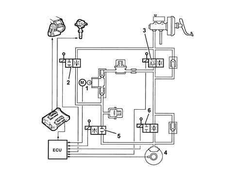
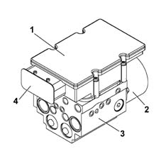
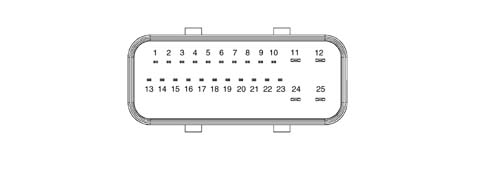
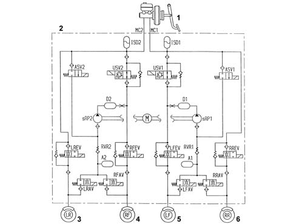
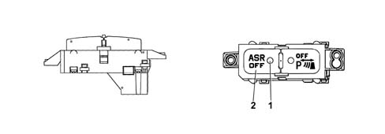

Operation
- Path
- Descriptions > 33 BRAKES > 3350 TRACTION CONTROL > 3350A A.S.R. CONTROL/REGULATION DEVICES > Operation
- Kind
- system description
- Applies to
- all engines; all production periods
- Interactive page
- https://sloeber94.github.io/elrnDB-lThss/en/#/152101
Applies to: all engines; all production periods
Operating principles
The system works through signals coming from the active sensors, the brake lights switch and the ASR on/off button.
It constantly compares the speed of the wheels on the same side of the vehicle (Right front with Right rear and Left front with Left rear) and when it detects a difference in speed, between the two wheels on the same side, of more than 2-6 km/h (intervention level) the ASR logic intervenes.
The ABS/ASR control unit converses continuously with the engine management control unit via the C-CAN line. The information between the two control units is updated every 10ms and each message is composed of 64 bit.
The ASR function is activated in all vehicle speed conditions, however, the intervention of the brakes is excluded above 80 km/h.

- 1 - A.B.S./A.S.R. control unit
- 2 - Engine management control unit
- 3 - (Active) wheel rpm sensors
- 4 - Brake pedal switch
- 5 - A.S.R. on/off button
- 6 - A.S.R. on/off LED
- 7 - Motorized throttle body
- 8 - Ignition system (advance variation)
- 9 - ASR warning light in instrument panel
- 10 - Brake pressure modulation
- 11 - Body Computer
- 12 - Slewing sensor
- 13 - Steering angle sensor
- 14 - Automatic transmission control unit
OPERATING LOGICS
Slipping of the drive wheels
Intervention - intervention times for good road grip conditions (asphalt)
Engine torque reduction by the engine management control unit through the alteration of the ignition advances, 6/100 of a second after the slipping limit is exceeded.
A further reduction in torque through a decrease in the throttle opening (by the engine management control unit through the motorized throttle body after 15/100 of a second).
Intervention of the hydraulic system (braking force on the drive wheels) after 2/10 of a second.
Operation in poor grip conditions
The system is capable of recognizing these conditions by comparing the acceleration of the drive wheels with the torque transmitted by the engine (engine load from the engine management control unit).
The system behaves in the same way as for both drive wheels slipping in good road grip conditions (asphalt) and the intervention levels are at the lower limit.
Slipping of one drive wheel only
intervention-intervention times
Torque reduction by the engine management control unit through the alteration of the ignition advances, 6/100 of a second after the slipping limit is exceeded.
A further reduction in torque through a decrease in the throttle opening (by the engine management control unit through the motorized throttle body after 15/100 of a second).
Intervention of the hydraulic system, a braking action exerted on the wheel that it slipping to guarantee a resistive force on the side with poor grip (T.C.).
This resistant force allows the differential to transmit the residual torque with grip at the wheel that is not slipping.
Slipping of one wheel round bends in good grip conditions (asphalt)
The system recognizes the bend from the speed of the rear wheels (driven).
It implements the same operating mode described for the "Slipping of one drive wheel only" condition, the intervention levels are at the upper limit. The torque reduction is applied gently.
Slipping of one wheel round bends in poor grip conditions (snow, ice)
The system implements the same operating mode described for the "Slipping of one drive wheel only" condition with the intervention levels at the lower limit. The torque reduction is accentuated (to ensure good side road holding).
Adjustment of engine braking torque during deceleration
Vehicle instability during deceleration in poor grip conditions
The system recognizes this condition from the engine load, from the speed of the front and rear wheels and from the brake pedal sensor. In this case there is an increase in drive torque through the intervention of the engine management control unit opeing the motorized throttel to overcome the natural instability of the vehicle due to the engine braking torque in poor grip conditions.
ASR/MSR system exclusion
If the system is excluded using the button in the centre console, which is advisable when the vehicle is travelling over difficult surfaces (e.g. snow, ice, deep mud, sand or gravel) or when snow chains are fitted on the drive wheels, the ABS and EBD functions remain activated.
Intervention levels
The different intervention levels between 2 and 6 km/h depend on environmental factors; some of the conditions have been described in the operating logics, others are:
- high acceleration level
- vehicle speed (see graph)
- type of tyres (normal or winter); with winter tyres and good grip, high intervention levels, e.g. with winter tyres and poor grip, low intervention levels. The system is capable of recognizing these conditions by comparing the acceleration of the drive wheels with the torque transmitted by the engine (engine load from the engine management control unit).

- K - Slipping level
ASR/MSR system failure
If there is a fault in the ABS, the ASR is also disabled. The following problems result in the ASR system only being excluded:
- C-CAN line errors
- interference with the speed signals
- interference with the drive wheel speed signals.
When these problems occur, the control unit activates the warning lights in the instrument panel and in the button.
The ASR warning lights logic is:
- with the ASR on, the warning light in the instrument panel is off and the LED in button is off
- with the ASR operating, the warning light in the instrument panel is intermittent and the LED in the button is off
- with the ASR switched off, the warning light in the instrument panel is on, the warning light in the button is on and there is an ASR not on message in the DOT matrix display
- with the ASR faulty, the warning lights in the instrument panel and the button are on and a fault message is shown on the DOT matrix display
The warning lights are operated by the ABS control unit via the C-CAN.
Operation of the hydraulic system
The electro-hydraulic unit on the version equipped with ASR has 4 additional solenoid valves.
When the (normally closed) intake solenoid valve is activated, the additional quantity of fluid required to increase the pressure and brake the wheel(s) can be received.
When the (normally open) solenoid valve is activated it allows the modulated pressure produced by the pump necessary for the intervention of the ASR to be maintained in the brake caliper-pump circuit.
With the brake pedal pressed, the electronic control unit:
- does not supply the (N.C.) intake solenoid valve (2).
- does not supply the (N.A.) solenoid valve (3).
In this way the system operates during the following stages:
- pressure increase;
- pressure maintenance;
- pressure reduction
with the Lucas ESP ABS system(See assembly ) 3340A ABS check/adjustment devices

- 1 - Pump
- 2 - Intake solenoid valve
- 3 - Operating solenoid valve
- 4 - Brake caliper
- 5 - Normally closed discharging solenoid valve
- 6 - Normally open pressurizing solenoid valve
When the ASR/TC function is switched on, the electronic control unit:
- supplies the hydraulic pump (1)
- supplies the (N.C.) intake solenoid valve (2)
- supplies the (N.A.) solenoid valve (3).
Therefore the pressure produced by the pump (1) reaches the brake caliper and is modulated, on the request of the electronic control unit, by the discharge (5) and pressurizing (6) solenoid valves.

- 1 - Pump
- 2 - Intake solenoid valve
- 3 - Operating solenoid valve
- 4 - Brake caliper
- 5 - Discharging solenoid valve
- 6 - Pressurizing solenoid valve
DESCRIPTION OF COMPONENTS
Electro-hydraulic unit
The electro-hydraulic unit consists of a control unit and an electro-hydraulic control unit.

- 1 - Electronic control unit
- 2 - Recover pump motor
- 3 - Electro-hydraulic unit casing
- 4 - Electrical connection
Electronic control unit
The electronic control unit carries out the following functions:
- acquiring the data coming from the wheel rpm sensors
- memorizing the control parameters defined during the vehicle P.D.I.
- memorizing the software
- processing the data acquired
- controlling the braking process
- detecting faults in the braking system components
- memorizing the fault codes and activating the ABS/EBD/ASR warning lights
- transmitting and receiving data via the diagnostic connector
- conversing with the engine management control unit
- controlling the ASR/MSR process
- transmitting and receiving data via the C-CAN line.
Control unit connector

PIN OUT
Pin | Function |
|---|---|
1 | CAN-L line |
2 | CAN-H line |
3 | ASR switch |
4 | ASR switch warning light |
5 | N.C. |
6 | Diagnostic line K |
7 | Right front sensor positive |
8 | Right front sensor signal |
9 | Right rear sensor positive |
10 | Right rear sensor signal |
11 | Earth |
12 | +30 supply |
13 | CAN-L line |
14 | CAN-H line |
15 | N.C. |
16 | VSO vehicle speed (recovery) |
17 | N.C. |
18 | N.C. |
19 | Left front sensor positive |
20 | Left front sensor signal |
21 | Left rear sensor positive |
22 | Left rear sensor signal |
23 | +15 supply |
24 | Pump earth |
25 | +30 pump supply |
Electro-hydraulic control unit
Specifications
It has the task of modulating the pressure of the fluid at the brake calipers via solenoid valves with the following operating stages:
- brake fluid pressure increase
- brake fluid pressure maintenance
- brake fluid pressure decrease.
Composition
The electro-hydraulic control unit consists of:
- twelve 2-way solenoid valves
- a dual circuit recovery pump
- two low pressure accumulators
- two high pressure accumulators.

- 1 - Brake servo brake pump assembly
- 2 - Electro-hydraulic control unit
- 3 - Left rear wheel
- 4 - Right front wheel
- 5 - Left front wheel
- 6 - Right rear wheel
Active sensors
Specifications
For the active sensors, see the ABS(See subassembly ) 3340 ANTI-LOCK BRAKING SYSTEM (A.B.S.)
ASR on/off button
Function
It has the task of switching the ASR/MSR system off and has an LED.
The button is in the centre console

- 1 - LED
- 2 - Off button